Beyond School Locations
Mapping the geography of equitable access to quality primary education in Mandera County, Kenya.
Explore the storySchools are essential, but their presence alone does not guarantee equitable access. This visual story examines where mapped primary schools are located, how they relate to the estimated population aged 5–14, and how geographical proximity varies across Mandera County. Gender, sanitation and digital-learning indicators add context on the conditions that shape an inclusive learning environment. Each map uses colour, symbols and boundaries to make a different part of the education-access question easier to see.
Where is the study focused?
Mandera County in north-eastern Kenya is the focus of this assessment. County and subcounty boundaries provide the geographic framework for comparing school and population indicators.
The project uses WGS 1984 UTM Zone 37N (EPSG:32637) as its main projected coordinate reference system. This supports distance calculations in metres and area calculations in square kilometres.
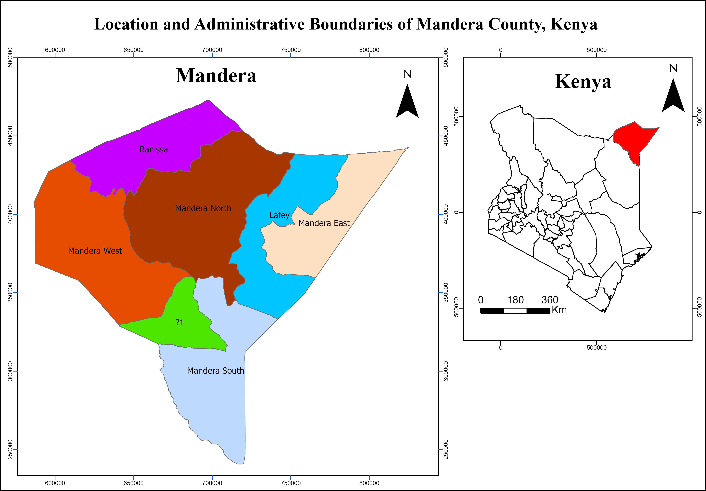
Where are the mapped primary schools?
The school-location map establishes the baseline: where the mapped educational facilities are situated in relation to Mandera’s administrative boundaries. Each school symbol marks a location in the source dataset; it should be read as a mapped facility, not as a measure of enrolment, capacity or service quality. Areas with fewer symbols deserve closer investigation, but the map alone cannot establish that a community has no access to a school.
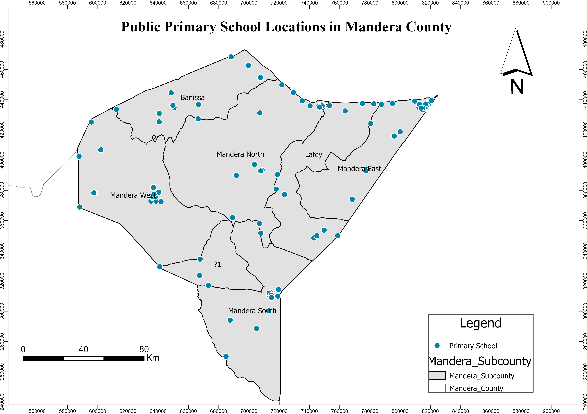
Explore Mandera County
Use the map to zoom and pan around the wider Mandera area. Switch between the street map and satellite imagery to get a sense of the landscape and settlement context. This is a reference map only: it does not display the project’s school dataset, verified school boundaries or analytical results.
School counts by subcounty
Spatial Join was used to count mapped primary schools within each subcounty. Read each bar as the number of school records assigned to that administrative area. A taller bar means more mapped schools, not necessarily better access: a subcounty may also have more children, a larger area or more dispersed settlements. Compare this chart with the population-per-school and proximity maps rather than using school counts alone.
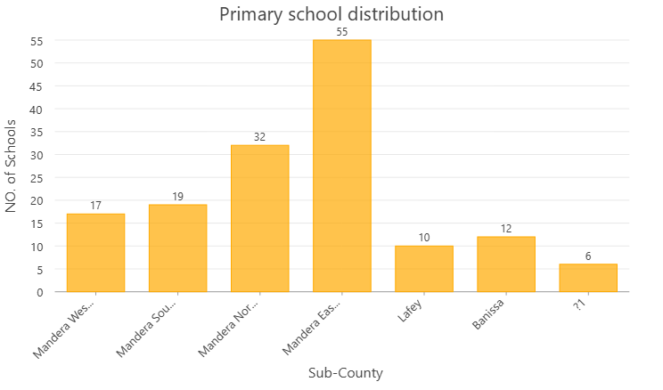
Where do potential learners live?
WorldPop 2025 estimates for male and female populations aged 5–9 and 10–14 were combined to create a population surface for ages 5–14. In this map, the coloured surface represents estimated numbers of children in the mapped cells, while the school symbols show the locations of facilities in the school dataset. Darker or more prominent population shading indicates higher estimated concentrations according to the map legend; it does not represent the number of children enrolled in nearby schools.
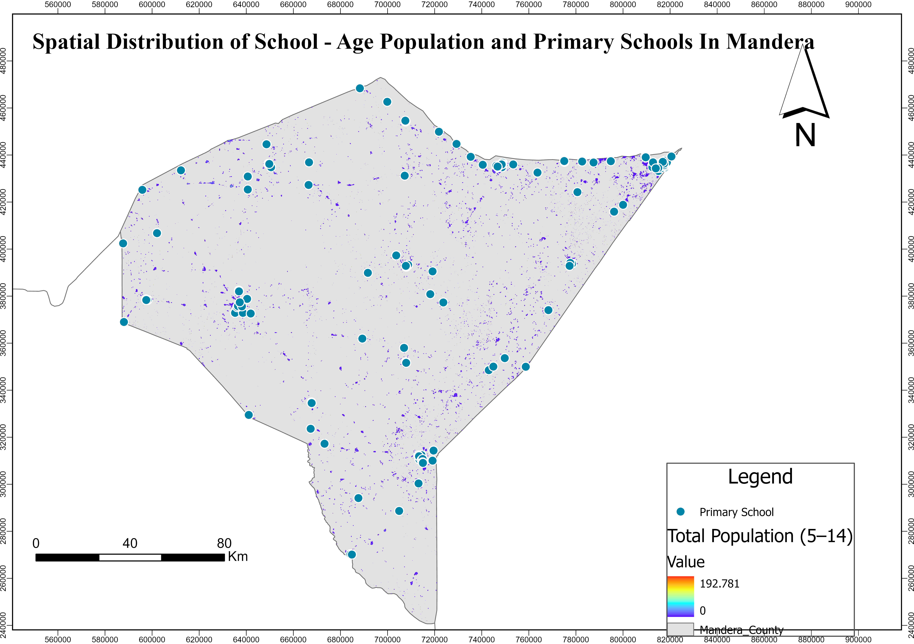
Estimated population per mapped school
Population totals were summarized by subcounty using Zonal Statistics as Table, then compared with mapped school counts.
The indicator is calculated as estimated population aged 5–14 divided by the number of mapped primary schools. Read the map colours using the class ranges in its legend: areas in higher classes have more estimated school-age children for each mapped school, while lower classes have fewer. This is a screening measure for where planners may need to investigate demand and provision together; it is not a count of pupils attending each school.
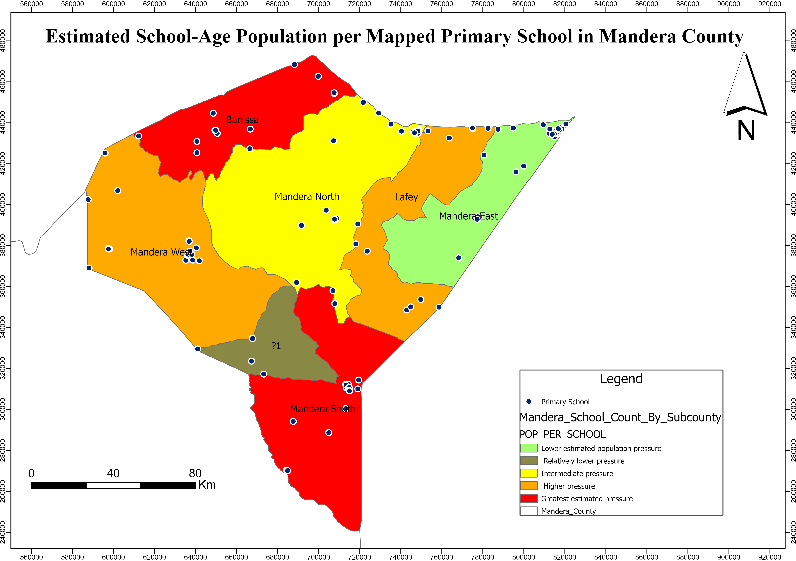
How are schools distributed within the county?
Administrative averages can conceal local variations. A regular 5 km grid was used to examine school concentration within smaller spatial units. Each grid cell summarises the mapped school locations falling within it, so cells with more school locations indicate local clustering in the dataset. Empty or lightly represented cells should be treated as prompts for further checking, not proof that there are no schools or services nearby.
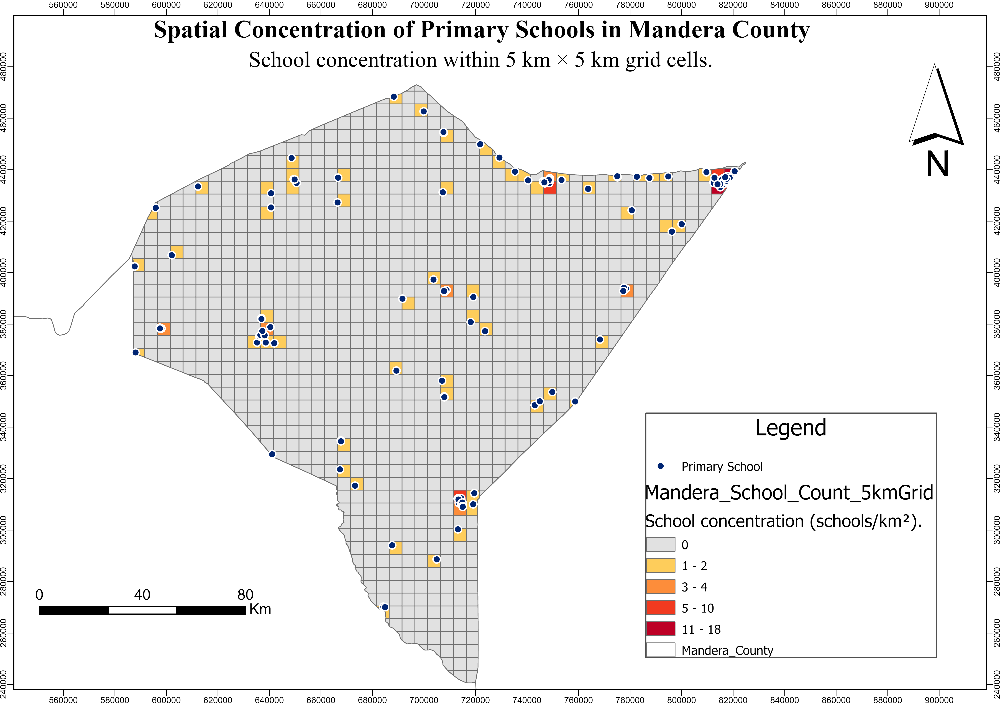
How close are population grid cells to schools?
Grid-cell centroids were generated and the Near tool measured straight-line distance to the nearest mapped school. The map groups those measurements into four distance bands: 0–5 km, more than 5–10 km, more than 10–20 km and more than 20 km. A cell in a farther band is geographically more distant from the nearest school point in the dataset than a cell in a nearer band. Use the map legend to identify each band and compare where the different colours occur across the county.
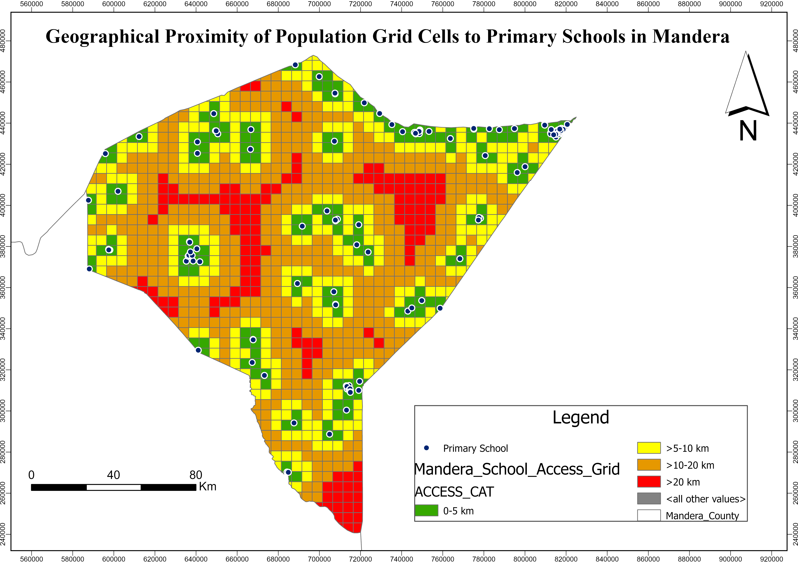
Access also depends on inclusion and learning conditions
Geographical proximity is only one dimension of equitable education. Selected gender, sanitation and digital-learning indicators provide context on participation and the school environment.
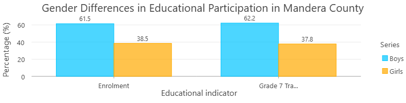
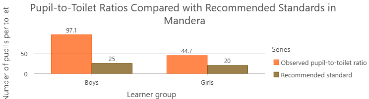
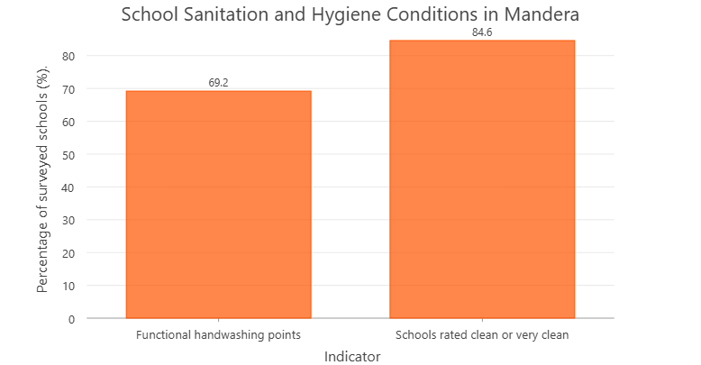
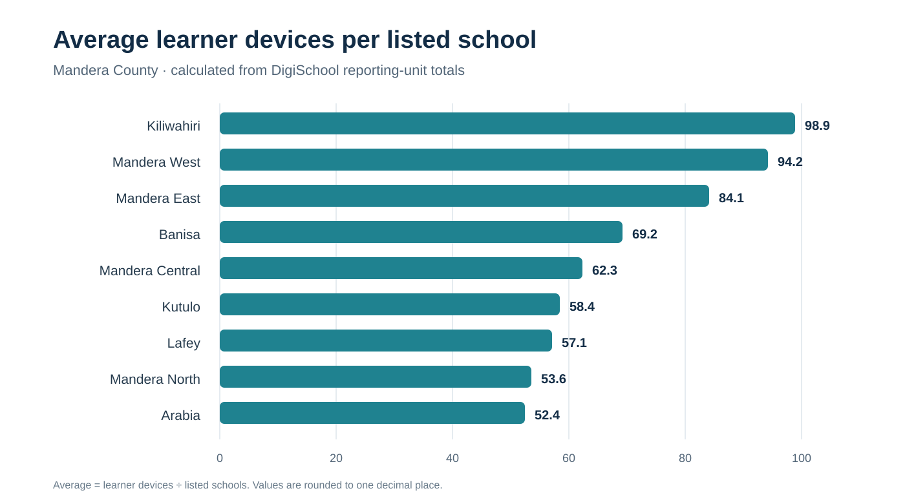
Digital learning: wider context
The Elimu Yetu Coalition's study of public schools across ten counties, including Mandera, reported the following pooled results. They are not Mandera-specific measurements.
From visual evidence to planning priorities
The maps and charts show why school counts alone are not enough to understand educational equity. The distribution of schools needs to be considered alongside where potential learners live, their proximity to facilities and the quality of the learning environment.
School points establish the distribution of mapped educational facilities.
Age-specific population estimates show where potential learners are concentrated.
Subcounty ratios and the 5 km grid compare population and school availability.
Centroid-to-school distances indicate relative geographical closeness.
Plan using population and school coverage together
Use the population and school maps to guide further assessment of areas where school availability may not correspond with potential learner concentrations.
Investigate more distant locations
Use road networks, settlement data and field verification to test the straight-line proximity patterns before selecting interventions.
Strengthen inclusion and school facilities
Support girls' participation and improve sanitation and inclusive school infrastructure.
Support effective digital learning
Complement device provision with electricity, connectivity, teacher training and equipment maintenance.
Conclusion
The project brings together six thematic maps and five supporting charts to examine several connected questions: where schools are mapped, where children aged 5–14 are estimated to live, how school availability compares with that population, and how far grid-cell centres lie from the nearest mapped school. The gender, sanitation and digital-learning indicators add an important reminder that a nearby school is only one part of a quality education experience. Together, the visuals support a more informed conversation about SDG 4, while the stated data limitations mean that the patterns should guide further investigation rather than be treated as a final measure of access or school performance.